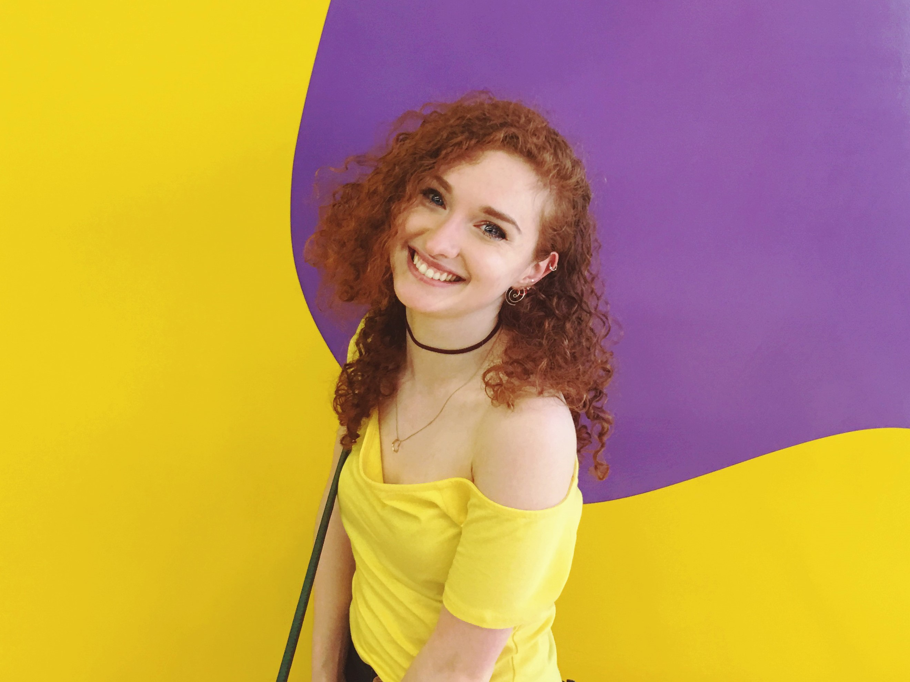
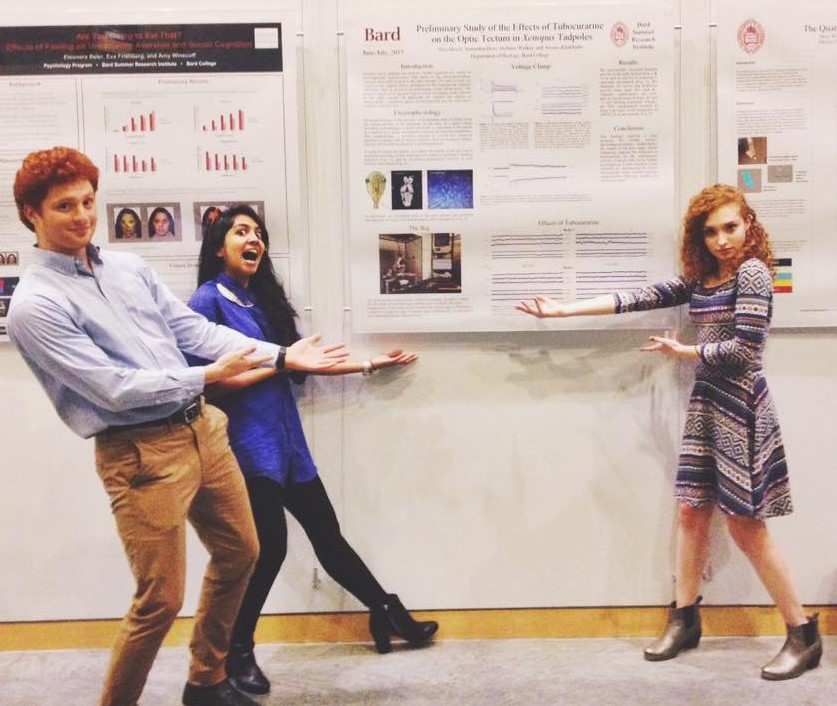

Stefanie
/stˈefəni/
noun
- Not a computer science major, but a member of a team of cool kids who's here to help you fresh Bardians learn some HTML.
- Synonyms: Stef, Stoof, "Mother of the Funky Bunch"

Fun(ish) Facts:
- I am a biology major with a concentration in Mind, Brain, and Behavior
- Publicity Intern with SPARC
- Former teaching fellow for Citizen Science
- I like to paint portraits
- Cat Person
- Will consume just about anything that has spinach or peanut butter in it
- Do daily crossword puzzles
- Can make you a paper crane on demand
- Musically illiterate
What does she do though?
My senior project (SPROJ) will involve Xenopus laevis tadpoles, their brains, electrophysiology, and probably some other fancy science that I just don't understand.
In fact, last summer we pioneered the electrphysiology labs, and protocols, and even made it on this giant fancy poster:

I also use this wikipedia photo as my header on every social media site I'm on:

Contact me: sw9568@bard.edu